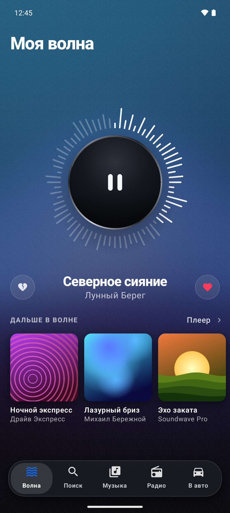
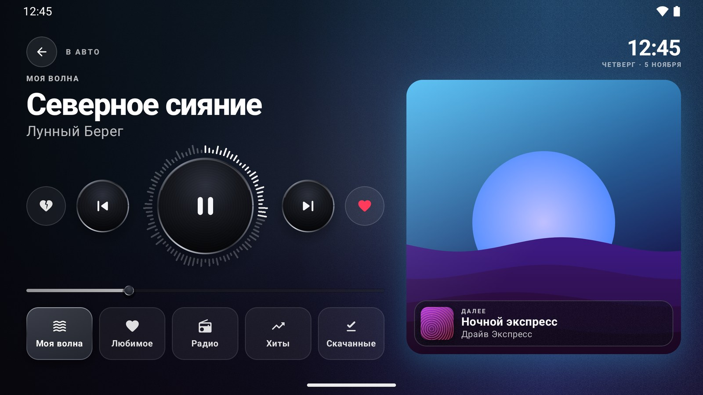

Чистый звук
и ничего лишнего
Быстрый и отзывчивый неофициальный клиент Яндекс Музыки в дизайне дорогой аудиотехники: металлические ручки, стекло и живой фон из обложки. «Моя волна», 37 FM-радиостанций, тексты песен, офлайн на карте и флешке и режим для автомагнитол.

Создано для тех, кто ценит скорость и красивые вещи
Только любимые треки, персональные рекомендации и стабильное воспроизведение.
Мгновенный запуск и плавная работа
Никаких скрытых фоновых процессов и лишней нагрузки на систему. Приложение быстро открывается и работает плавно даже на бюджетных смартфонах и автомобильных магнитолах, а на слабых устройствах само включает облегчённый режим анимаций.
«Моя волна» без рекламы
Бесконечный персональный поток в одно касание. Настройте характер, настроение и язык или запустите волну по любому треку; кольцо спектра вокруг кнопки показывает, сколько трека прошло.
37 FM-радиостанций
Прямой эфир DFM, Record, Relax FM, Европа Плюс и других станций: шкала приёмника, категории и избранное. В машине избранные станции переключаются кнопками, как пресеты.
Музыка не прерывается
Следующие треки заранее сохраняются в кэш. Когда связь проседает — в тоннеле или на трассе, — трек доигрывает из кэша с той же секунды, а качество само вернётся, когда сеть выровняется.
Тексты песен
Слова трека — в плеере и крупно в режиме «В авто», если у песни есть текст в каталоге.
Офлайн: память, карта, флешка
Скачивайте любимое, плейлисты и альбомы. Хранить можно в памяти, на SD-карте или флешке — там треки зашифрованы и играют только в приложении.
Музыка с устройства
Свои файлы с телефона, карты памяти и флешки: названия и обложки из тегов, папки, исполнители — рядом со скачанным.
Плейлисты и альбомы
Создавайте и редактируйте свои плейлисты, меняйте порядок перетаскиванием; сохранённые плейлисты и любимые альбомы — тоже здесь. Правки сразу видны и в официальном приложении.
Поиск голосом
Скажите исполнителя или песню — в поиске или прямо в машине. Отдельные страницы артистов и альбомов с популярными треками и дискографией.
Фильтры по желанию
Можно пропускать треки 18+ и музыку, которую Яндекс отметил как созданную ИИ, — в волне и при переходе к следующему треку.
Масштаб интерфейса
Авто-подбор размера под плотность экрана или ручная регулировка 50–200% — спасает автомагнитолы, где интерфейс выходит слишком мелким или крупным.
Дизайн Hi-Fi
Интерфейс как дорогая аудиотехника: металлические ручки, матовое стекло, а цвет всего приложения берётся из обложки играющего трека.
Плеер и очередь под пальцем
Плеер тянется за пальцем вверх и вниз, смена трека — свайпом по обложке. Треки в очереди можно перетаскивать и убирать свайпом.
Лайк из шторки
«Не нравится» и сердечко прямо в плеере в шторке, на экране блокировки и в Android Auto — не нужно открывать приложение.
Виджет «Сейчас играет»
Обложка и кнопки управления прямо на рабочем столе — переключайте треки и ставьте на паузу, не открывая приложение.
Автообновления
Приложение само находит новые релизы на GitHub и обновляется в пару касаний. Не хотите эту версию — нажмите «Пропустить»: окно вернётся только со следующей.
Журналы сбоев и воспроизведения
Если что-то пошло не так, отчёт можно отправить разработчику в пару касаний — данные входа в него не попадают.
Музыка за рулём
без отвлечения от дороги
Интерфейс как приборная панель дорогого автомобиля — для комфортного управления на Android-магнитолах Teyes, Kingbeats, Incar, Geely и планшетах, лёжа и стоя.
- ✓ Огромные металлические ручки управления, по которым легко попасть на ходу
- ✓ Плавный таймлайн, время «прошло / осталось» крупными цифрами, часы и дата прямо на панели
- ✓ Выбор стороны руля: кнопки управления ближе к водителю, обложка — с дальней стороны
- ✓ Широкие магнитолы (1920×720 и другие): три колонки — плеер, «Далее» списком и обложка; раскладку можно закрепить
- ✓ «Станции»: избранные радиостанции и их переключение кнопками, как пресеты
- ✓ «Текст» и «В плейлист» прямо на экране машины — разложить трек по своим подборкам, не лайкая
- ✓ Голосовой поиск одной кнопкой: скажите, что включить
- ✓ Волна, любимое, радио, хиты, скачанное и музыка с флешки — переключение в одно касание
- ✓ Масштаб интерфейса под экран магнитолы и кнопки на руле как обычные медиа-кнопки

Установка за 3 простых шага
Никаких сложных настроек и root-прав. Готово к работе за полминуты.
Скачайте файл APK
Загрузите актуальную версию приложения прямо с GitHub по кнопке или отсканировав QR-код камерой телефона.
Разрешите установку
При первом открытии файла подтвердите разрешение на установку из используемого браузера или проводника файлов.
Войдите через Яндекс ID
Авторизуйтесь через страницу Яндекс ID — или по коду с телефона, если на магнитоле нет браузера. Ваши треки, плейлисты и «Моя волна» сразу синхронизируются.
Часто задаваемые вопросы
Поддержать разработчика
Приложение бесплатное и без рекламы. Если оно вам полезно, разработку можно поддержать — по желанию. Наведите камеру телефона на код или нажмите на него.
ЮMoney
Картой, через СБП или кошельком
Страница сбора откроется в новой вкладке
Открыть сборПлатёж проходит на стороне ЮMoney — приложение и сайт данных карты не видят.
USDT
Сеть TRON (TRC20)
Отсканируйте код в кошельке или скопируйте адрес
TMAnQX1jC4rz9Mmu8yYonukwcJ72oFxYTE
⚠ Только сеть TRON (TRC20). Перевод в другой сети не дойдёт.
Неофициальный клиент. Не связан с ООО «Яндекс». Все права на контент и товарные знаки принадлежат правообладателям. Поддержка разработчика носит исключительно добровольный и безвозмездный характер.